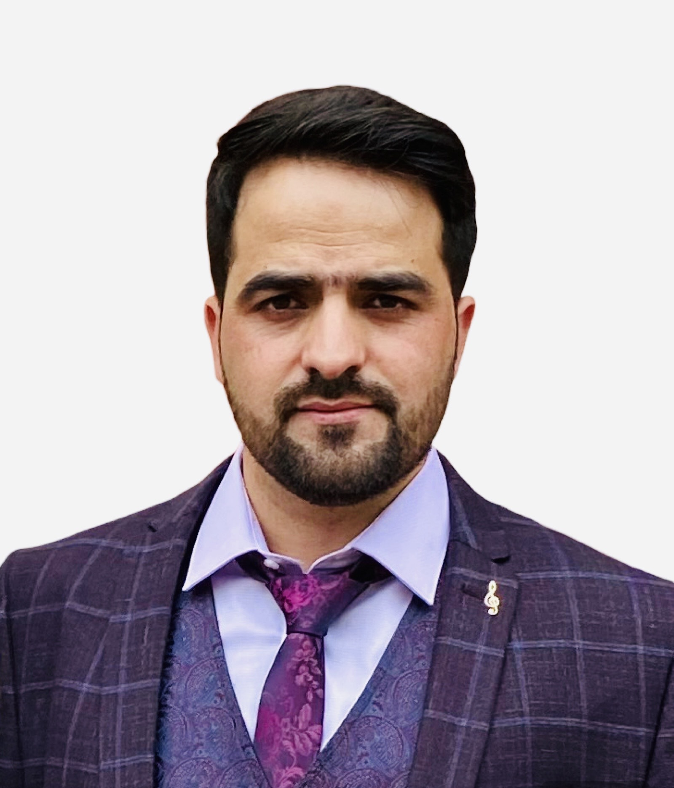
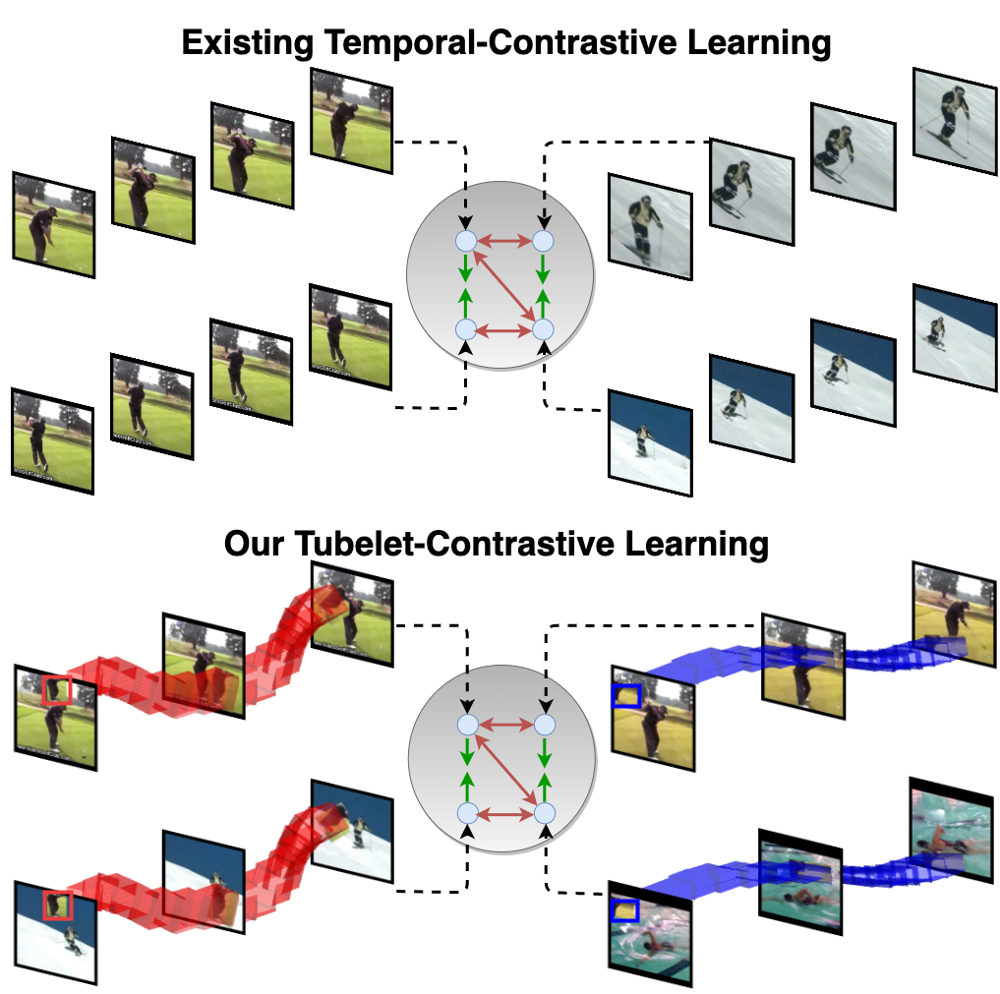

I am postdoctoral researcher at King Abdullah University of Science and Technology (KAUST) working with Prof. Bernard Ghanem. I completed my Phd at the University of Amsterdam, advised by Prof. Cees Snoek. My area of interest is Video Understanding, with my PhD thesis (which you can find here ) focussing on Video-Efficient Foundation Models. I am particularly interested in training foundation models via self-supervised learning from multiple modalities of the video data.
Contact: f.m.thoker *at* uva.nl
News & Activities
- September 2024: Our paper 'LocoMotion: Learning Motion-Focused Video-Language Representations' is accepted as an Oral to ACCV
- July 2024: Our paper 'SIGMA: Sinkhorn-Guided Masked Video Modeling' is accepted to ECCV
- May 2024: I gave a talk at SkatingVerse Workshop , International Conference on Automatic Face and Gesture Recognition 2024
- March 2024: I joined joined King Abdullah University of Science and Technology (KAUST) as a Post Doctoral Researcher
- December 2023: I successfully defended my Ph.D. thesis titled Video-Efficient Foundation Models
- November 2023: My Ph.D. thesis is approved by the doctoral committee, with defense set on 8th of December 2023
- September 2023: 'Tubelet-Contrastive Self-Supervision for Video-Efficient Generalization' is accepted as an oral at NCCV
- August 2023: I gave a talk at University of Bonn. Thanks for the invitation from Jürgen Gall
- August 2023: I am selected for 'ICCV 2023 Doctoral Consortium'
- July 2023: Our paper 'Tubelet-Contrastive Self-Supervision for Video-Efficient Generalization' is accepted to ICCV
- April 2023: I gave a talk at King Abdullah University of Science and Technology (KAUST). Thanks for the invitation from Bernard Ghanem
- August 2022: I attented International Computer Vision Summer School (ICVSS) 2022
- July 2022: Our paper 'How Severe is Benchmark-Sensitivity in Video Self-Supervised Learning?' is accepted to ECCV
- August 2021: Our paper Skeleton-Contrastive 3D Action Representation Learning was accepted at ACM Multimedia
- Octobre 2020: Our paper Feature-Supervised Action Modality Transfer was accepted at ICPR
- May 2019: I joined VIS LAB as a Ph.D. candidate at Univeristy of Amsterdam
- April 2019: Our paper CROSS-MODAL KNOWLEDGE DISTILLATION FOR ACTION RECOGNITION was accepted at ICIP
Publications
|  |
SIGMA: Sinkhorn-Guided Masked Video Modeling Mohammadreza Salehi*, Michael Dorkenwald*, Fida Mohammad Thoker*, Efstratios Gavves, Cees G. M. Snoek, Yuki M. Asano European Conference on Computer Vision (ECCV), 2024. [Webpage] [arXiv] [Code] |
|
Tubelet-Contrastive Self-Supervision for Video-Efficient Generalization Fida Mohammad Thoker, Hazel Doughty, Cees Snoek International Conference on Computer Vision (ICCV), 2023. [Webpage] [arXiv] [Code] |
|
|
How Severe is Benchmark-Sensitivity in Video Self-Supervised Learning? Fida Mohammad Thoker, Hazel Doughty, Piyush Bagad, Cees Snoek European Conference on Computer Vision (ECCV), 2022. [Webpage] [arXiv] [Code] |
|
 |
Skeleton-Contrastive 3D Action Representation Learning Fida Mohammad Thoker, Hazel Doughty, Cees Snoek ACM International Conference on Multimedia (ACMMM), 2021 [arXiv] [Code] |
 |
Feature-Supervised Action Modality Transfer Fida Mohammad Thoker, Cees Snoek IEEE International Conference on Pattern Recognition (ICPR), 2020 [arXiv] |
|
CROSS-MODAL KNOWLEDGE DISTILLATION FOR ACTION RECOGNITION Fida Mohammad Thoker, Juergen Gall IEEE International Conference on Image Processing (ICIP), 2019 [arXiv] |
Academic Service
Reviewer: BMVC 2020, CVIU 2021, Nuerips 2021, ICCV 2021, ECCV 2022, ACCV 2022, CVPR 2023, ICCV 2023
Teaching
Teaching Assistant: Deep Learning for Visual Recognition (MSc Computer Science Univerisity of Bonn)
Teaching Assistant: Technical Neural Networks (MSc Computer Science Univerisity of Bonn)